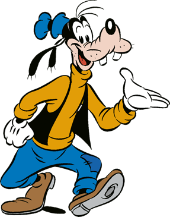

Goofy
123 Toontown St
Disneyland, CA 98765

Summary
With a timeless career in the entertainment industry, Goofy is a cherished character known for bringing joy and laughter to audiences worldwide. His goofy antics and lovable personality have made him a staple in the hearts of both children and adults. Beyond his on-screen persona, Goofy is dedicated to teamwork, collaboration, and creating magical moments for everyone he encounters.
Experience
Walt Disney Productions | Toontown, CA
Entertainer | July 1928 - Present
- Performed in numerous animated films, TV shows, and theme park events, showcasing Goofy's unique charm and humor.
- Collaborated with fellow Disney characters and performers to create memorable and engaging experiences for guests.
- Participated in promotional events and charity activities, contributing to the positive image of Disney and its characters.
Skills
- Goofiness: Demonstrated ability to bring laughter and joy to audiences of all ages.
- Team Collaboration: Extensive experience working alongside various Disney characters and performers to create magical moments.
- Entertainment: Proven track record of entertaining audiences through animated films, TV shows, and live performances.
- Adaptability: Successfully adapted to different roles and scenarios within the entertainment industry.
- Positive Attitude: Maintained a positive and upbeat demeanor, contributing to a fun and welcoming environment.